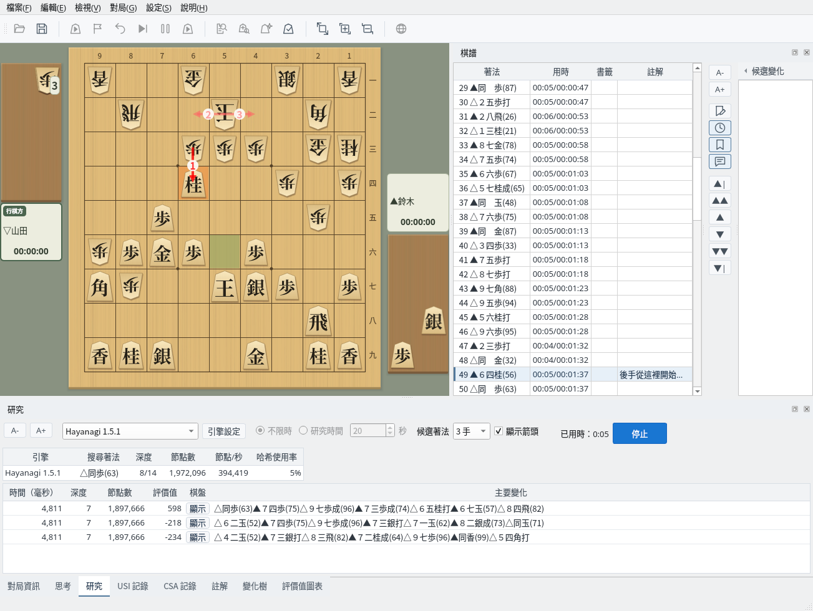
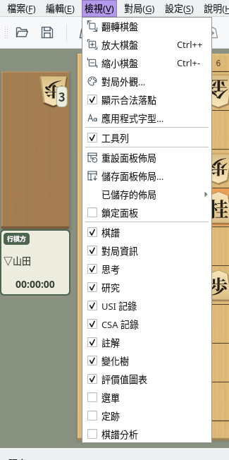
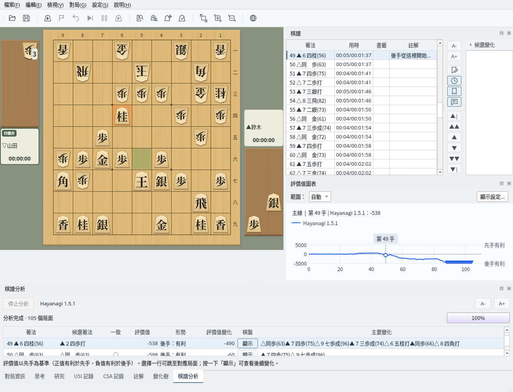
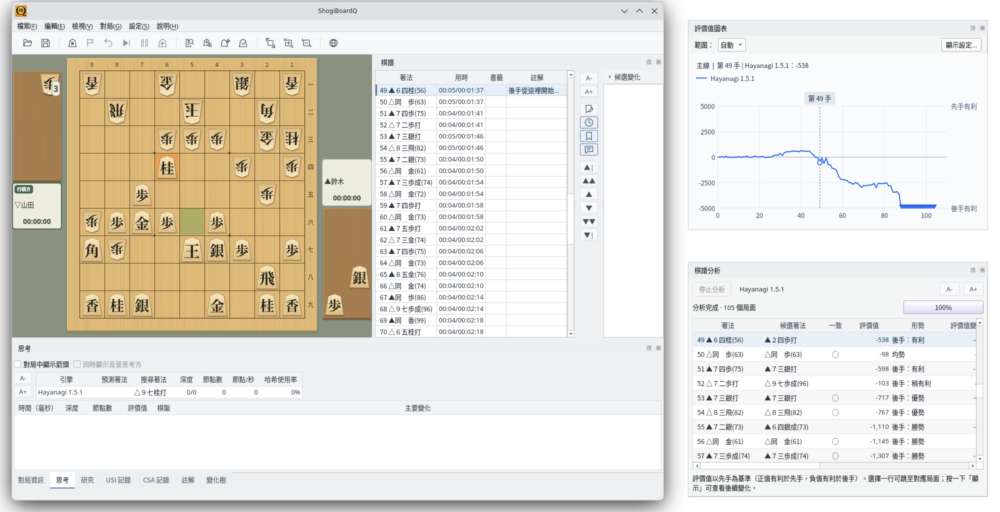
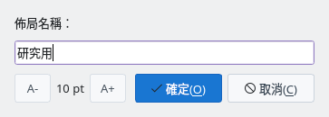
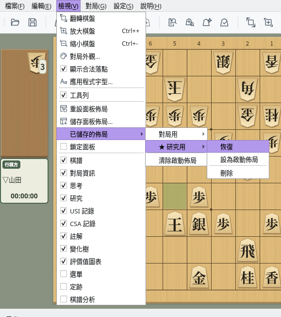

自由排列面板，自訂主視窗
截圖於 Linux 上以繁體中文介面擷取。
主視窗中的棋譜、思考等都是可停駐的面板
棋盤右側是「棋譜」，下方以分頁排列「對局資訊」「思考」「研究」「USI 記錄」「CSA 記錄」「註解」「變化樹」「評價值圖表」。按一下分頁即可切換顯示的面板。
「選單」和「定跡」一開始不顯示。「棋譜分析」在開始分析棋譜時顯示。

預設佈局：右側為棋譜，下方為思考、研究等分頁（研究中的畫面）
「檢視」選單下部列出了各個面板，勾選即顯示，取消勾選即隱藏。也可以按一下面板標題列右端的 × 關閉。關閉的面板可以從「檢視」選單重新顯示。

「檢視」選單：勾選或取消勾選以顯示或隱藏面板
拖曳面板，移到其他位置或獨立的視窗
拖曳面板的標題列，可以把面板移到主視窗的上下左右邊緣。放到其他面板上時，兩者會合併為分頁。拖曳面板之間的邊界可以調整大小。

佈局範例：把評價值圖表移到棋譜下方，下方顯示棋譜分析的結果
把標題列拖到主視窗之外，或按兩下標題列（或按一下標題列右端的 ⧉），面板就會成為獨立的視窗。再按兩下即可放回主視窗。
使用多台螢幕時，可以把評價值圖表或棋譜分析放到另一台螢幕上，以更大的面積顯示。

浮動：評價值圖表與棋譜分析成為獨立視窗的範例
為常用的佈局命名儲存，隨時叫用
選擇「檢視」→「儲存面板佈局…」，輸入佈局名稱後儲存。已有同名佈局時，會確認是否覆寫。

儲存面板佈局：輸入佈局名稱
「檢視」→「已儲存的佈局」中列出已儲存的名稱，每個佈局都可以選擇「恢復」「設為啟動佈局」「刪除」。啟動佈局帶有 ★，下次啟動時使用該佈局。選擇「清除啟動佈局」後，將以預設佈局啟動。
未設定啟動佈局時，主視窗內的佈局在下次啟動時恢復為預設。「棋譜」「評價值圖表」「選單」「定跡」「棋譜分析」的顯示狀態和作為獨立視窗時的位置會保留。

已儲存的佈局：★ 表示啟動佈局；每個佈局都可以恢復或刪除
勾選「檢視」→「鎖定面板」後，面板不能移動或浮動，可以防止誤拖曳打亂佈局。面板仍可顯示或隱藏。
選擇「檢視」→「重設面板佈局」，包括浮動的面板在內，所有面板都會恢復為預設佈局。